5269 krijgt definitieve RandstadRail-outfit en meer nieuws...
- donderdag 04 december 2008 21:55
- Geschreven door Joachim
Vandaag werd rijtuig 5269 in de lijnwerkplaats Waalhaven voorzien van de definitieve RandstadRail-outfit. Er zullen 10 rijtuigen volgen van het Type T, in de serie 5261 t/m 5271. Deze rijtuigen zullen het voorloopbedrijf van RandstadRail gaan uitvoeren en het tracé tussen de stations Rotterdam Hofplein en Den Haag Centraal berijden (Hofpleinlijn).
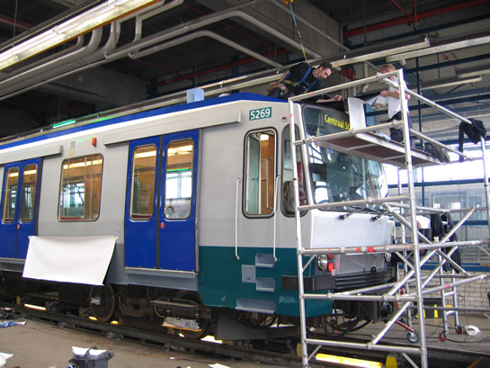
Rijtuig 5269 wordt voorzien van de definitieve outfit op spoor 134.
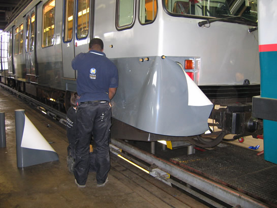
Het bestickeren van metrorijtuigen is vakwerk. Op deze foto wordt een groen gedeelte donkergrijs beplakt.
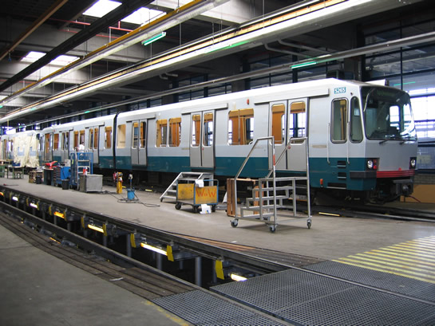
Rijtuig 5265, de ruiten ontbreken en het rijtuig wordt voorbereid op de aanpassingen.
Inmiddels zijn alle elf rijtuigen Type T aanwezig op lijnwerkplaats Waalhaven. Een groot deel wordt op dit moment cosmetisch verbouwd. Daarnaast draagt Cegelec in opdracht van Siemens zorg voor de inbouw van het nieuwe spoorbeveiligingsysteem. Hiervoor moet een deel van de cabine van de rijtuigen aangepast worden. Ook worden er nieuwe bestuurdersstoelen geplaatst.
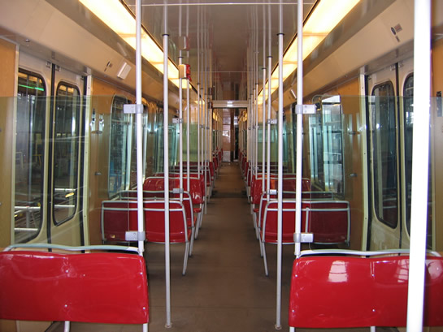
Het definitieve interieur van metrorijtuig 5269.
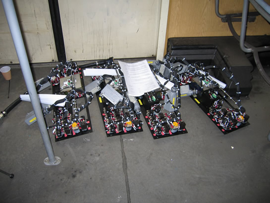
Voor de cabine zijn nieuwe elementen vervaardigd met daarin o.a. de snelheidsmeter.
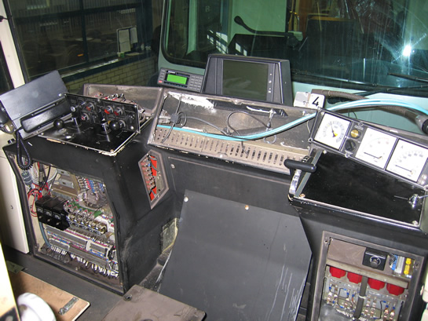
Deze elementen worden ingebouwd in het centrale deel, onder de TreinTv-installatie.
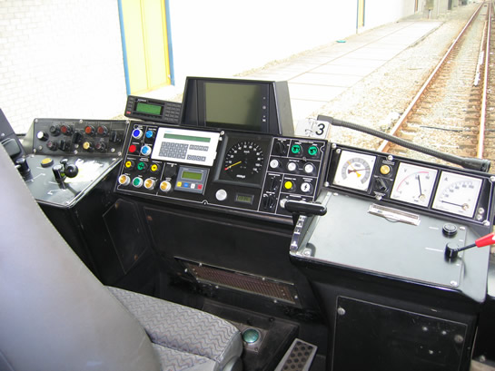
Uiteindelijk leidt dat tot bovenstaand resultaat. De witte box aan de linkerzijde is overigens nog niet definitief.
Omdat het RandstadRail-tracé een brug kent zonder bovenleiding, worden alle elf rijtuigen voorzien van een andere pantograaf. De huidige pantografen zouden te ver omhoog gaan, wanneer er een deel zonder bovenleiding gepasseerd wordt. In de nieuwe pantografen wordt daarom een hoogtebegrenzing ingebouwd.
Ook werd vandaag een van de rijtuigen doorgelicht door Loyds, een bedrijf dat de technische toestand van de rijtuigen controleert, evenals de veiligheidsaspecten. Dit is noodzakelijk om met de huidige rijtuigen op de Hofpleinlijn te mogen rijden. Ook zal NedTrain (service en- onderhoudsbedrijf) eind april de rijtuigen nog controleren voordat de overdracht naar RandstadRail plaatsvindt.
Daarnaast worden er geregeld proefritten gehouden met de reeds technisch omgebouwde rijtuigen. Spoor 131 van emplcement Waalhaven is ingericht als testspoor. De werking van het beveiligingsysteem ZUB 222c wordt hier getest. Het testspoor is voorzien van enkele baankoppelspoelen en een lichtsein.
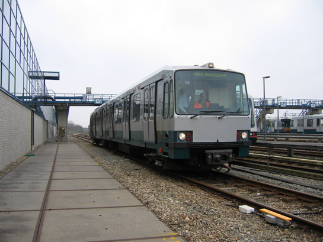
Rijtuig 5261 berijdt het testspoor. Linksonder de baankoppelspoel welke zorgdraagt voor communicatie tussen de baan en het rijtuig.
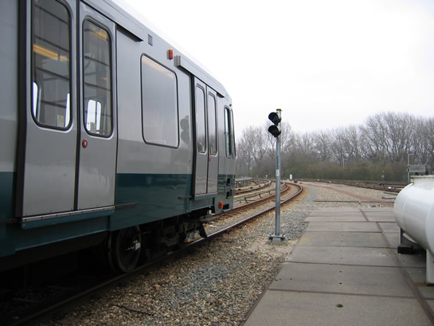
Het lichtsein op spoor 131. Wanneer het metrorijtuig een zgn. IMU-lus berijdt, gaat de tekst "IMU" branden op het lichtsein. Even later licht de letter "A" (Abfahrt) op en kan het rijtuig het lichtsein passeren.
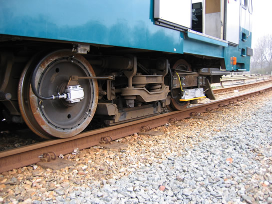
Rechts de baankoppelspoel, die bevestigd is aan het draaistel. Op de voorgrond een spoel die de omwentelingen van het wiel meet en aan de hand daarvan informatie verzendt en ontvangt naar/van het spoorbeveiligingsysteem.
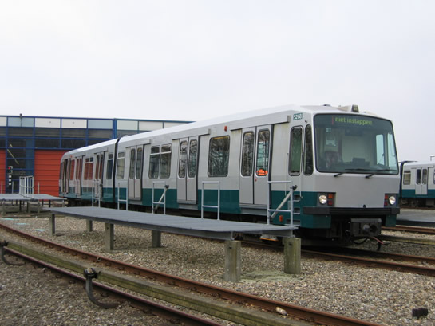
Ook rijtuig 5268 is voorzien van het nieuwe spoorbeveiligingsysteem en kan gebruik maken van spoor 131.
In de nacht van vrijdag op zaterdag a.s. worden er geluidsmetingen verricht tussen de stations Rhoon en Poortugaal. Er wordt gemeten of het geluid van de draaistellen afgenomen is na de revisie hiervan bij de rijtuigen die op het RandstadRail-tracé dienst gaan doen.
De verwachting is dat de eerste rijtuigen in week 18 of 19 naar de NedTrain-werkplaats in Leidschendam getransporteerd worden.
5216
Rijtuig 5216 verloor vorige week donderdag omstreeks 12.00 uur zijn pantograaf, nadat deze uit de vergrendeling was geschoten. De pantograaf klapte hierdoor op de loopbrug, onderdeel van emplacement 's-Gravenweg, tussen de stations Capelsebrug en Kralingse Zoom. De metro was op weg richting Ommoord/Nesselande als wagendienst 552. Uiteindelijk kwam het metrorijtuig vlak voor station Capelsebrug tot stilstand.
Uiteindelijk is besloten de combinatie metrorijtuigen voorzichtig naar het keerspoor van station Capelsebrug te rijden en vanaf daar in te rukken richting remise 's-Gravenweg, dit met behulp van locomotief 6102. De vertragingen waren aanzienlijk.
Het incident met de pantograaf heeft niets te maken met het incident van vrijdag 7 april, toen de rijtuigen 5405 en 5410 de pantograaf verloren nadat deze met de pantograaf tegen dezelfde loopbrug aanreden.
Rijtuig 5216 is inmiddels voorzien van een nieuwe pantograaf en rijdt sinds maandag weer mee in de dienst.
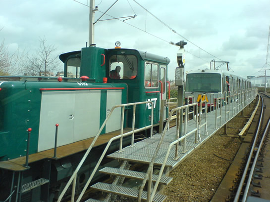
Locomotief 6102 op weg naar rijtuig 5216, waarvan de pantograaf ongelukkig op het dak ligt.
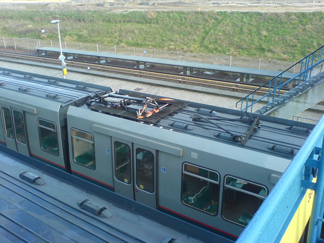
Uiteindelijk werd de pantograaf op het dak vastgezet in afwachting van reparatie en vervanging.
Spoorwerkzaamheden
Binnenkort zullen de spoorstaven tussen de stations Hesseplaats en Ambachtsland vervangen worden. Hiervoor vertrok afgelopen maandagavond laat locomotief 6101 met drie platte wagens, met daarop nieuwe spoorstaven, vanaf emplacement 's-Gravenweg. De spoorstaven worden opgeladen op het werkemplacement van lijnwerkplaats Waalhaven.
Aangepaste cabine
Bij wijze van proef wordt een van de rijtuigen van de serie 5300, welke doorgaans dienst doet op de Erasmuslijn, voorzien van een glazen, doorzichtige cabinewand. Er wordt bekeken in hoeverre bestuurders en reizigers dit op prijs stellen, dit i.v.m. de aanschaf van het nieuwe materieel voor RandstadRail, waarbij een doorzichtige cabinewand een optie is.
Daarnaast is er op 30 maart een delegatie van het metrobedrijf op bezoek geweest in de fabriek van Bombardier in Brugge (België). Hier is een mock-up opgebouwd van de cabine van het nieuw te bouwen RandstadRail-materieel. Bekend werd dat de kooicontructie rondom de cabine beter wordt, om de klap van een mogelijke aanrijding op te vangen. Daarnaast komt er een extra paneel in de cabines om het spoorbeveiligingsysteem te overbruggen. Ook zullen de rijtuigen voorzien worden van cameratoezicht.
7101
Werkwagen 7101, beter bekend als de "Pipowagen" is vorige week op transport gesteld naar de Centrale Werkplaats Kleiweg. De 7101 wordt gereviseerd in het kader van de algehele revisie van het werkwagenpark van het metrobedrijf. Ook is locomotief 6001 aanwezig in de Centrale Werkplaats voor een revisie.